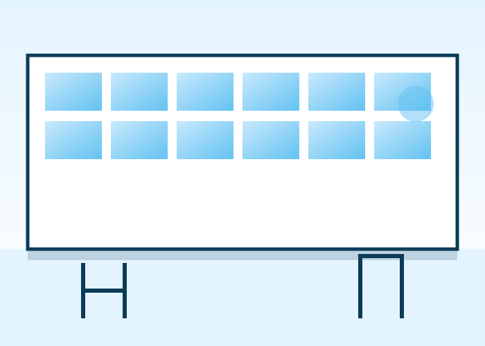

Tafotien Métallique et Vitrages
TMV-SARL est une entreprise spécialisée dans la métallerie et le vitrage, basée à Kalaban Koro, Bamako, au Mali. Nous concevons et réalisons des ouvrages métalliques et vitrés pour les particuliers, les entreprises et les institutions, avec un souci constant de qualité et de précision.
Sous la direction d'Abdramane Dembélé, notre équipe accompagne chaque client de la prise de besoin jusqu'à la pose finale de l'ouvrage.

Notre histoire
Les informations détaillées de notre histoire sont en cours de rédaction. Le contenu ci-dessous est temporaire et sera complété avec les informations réelles de l'entreprise.
Création de l'entreprise
TMV-SARL est fondée à Kalaban Koro, Bamako, avec pour ambition de proposer des ouvrages en métallerie et vitrage de qualité.
Développement de l'activité
Contenu temporaire. Cette section sera complétée avec les grandes étapes réelles de développement de l'entreprise : nouveaux ateliers, projets marquants, élargissement de l'équipe, etc.
Une activité au service de Bamako
TMV intervient aujourd'hui auprès de particuliers et de professionnels pour la conception et la réalisation d'ouvrages métalliques et vitrés sur mesure.
Notre mission
Concevoir et réaliser des ouvrages métalliques et vitrés durables, adaptés aux besoins réels de chaque client, à Bamako et dans ses environs.
Notre vision
Devenir une référence locale en métallerie et vitrage, reconnue pour la qualité de ses réalisations et son sérieux professionnel.
Nos valeurs
Qualité, sur-mesure, professionnalisme, respect des délais et écoute du client guident chacun de nos projets.
Domaines d'intervention
Métallerie
Fabrication métallique sur mesure.
Portes & garde-corps
Portes, rampes et garde-corps métalliques.
Escaliers
Escaliers métalliques sur mesure.
Vitrage
Baies, fenêtres, vitrines et cloisons vitrées.
Abdramane Dembélé
Directeur Général de TMV-SARL, Abdramane Dembélé supervise l'ensemble des activités de l'entreprise et veille à la qualité de chaque réalisation livrée aux clients.
Découvrir l'équipeDiscutons de votre projet
Notre équipe est à votre écoute pour étudier vos besoins.